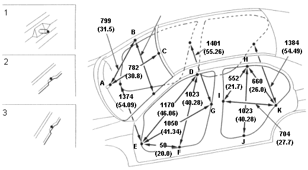
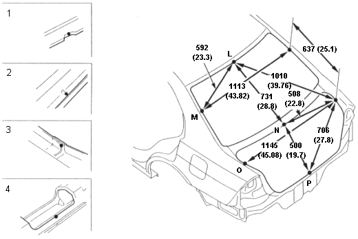

Opening Repair Chart |
4-12 |
Door and Windshield Openings:
Unit: mm (in.)

Windshield lower dashboard guide pin
Windshield opening flange notch (2 places)
Door opening flange notch (16 places)
Rear Window and Trunk Lip Openings:

Rear window opening flange notch (3 places)
Trunk gutter area convex bead
Outer panel range end (2 places)
Trunk seal flange water drain notch